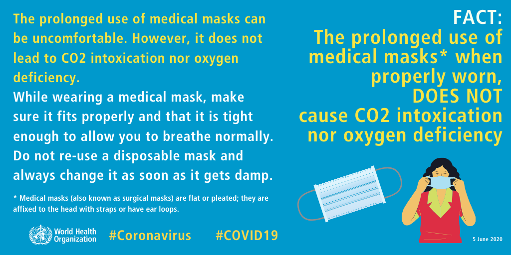
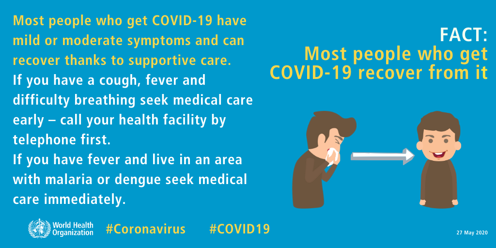
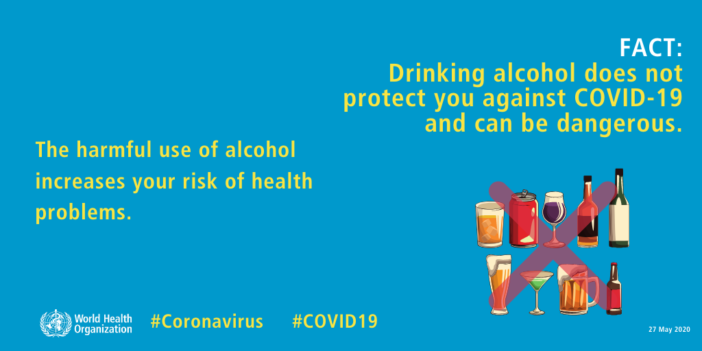
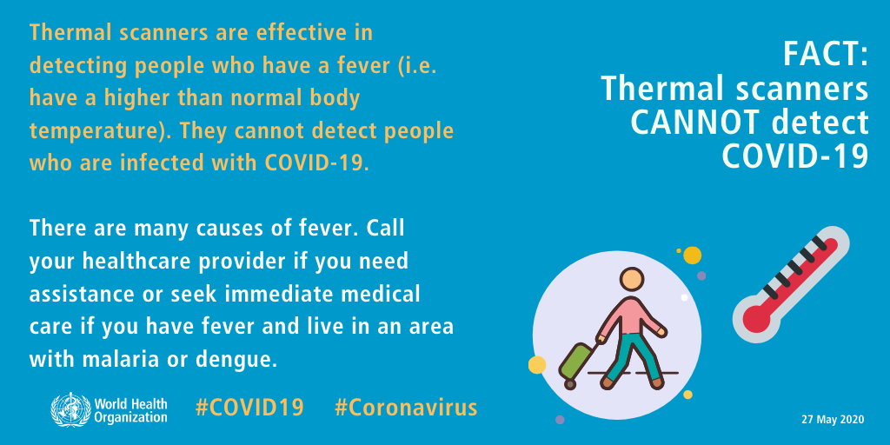
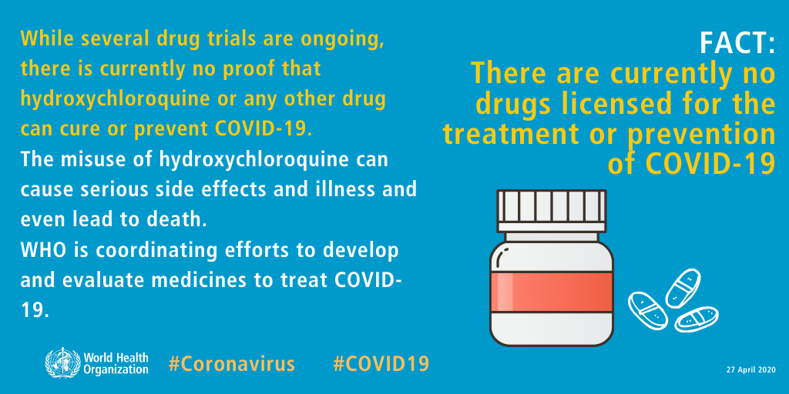
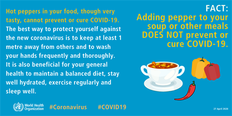
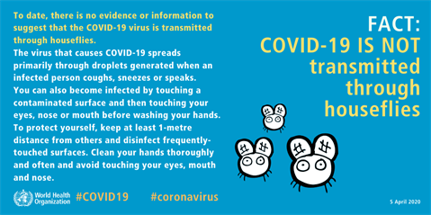
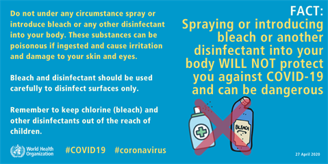
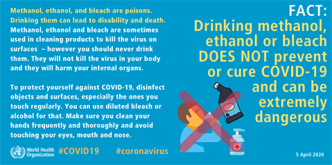
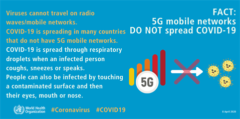

Equip yourself with information.Knowing the facts can also assess your mental health in a better way.Here are some myths and facts about COVID-19
- The prolonged use of medical masks when properly worn, DOES NOT cause CO2 intoxication nor oxygen deficiency
- Most people who get COVID-19 recover from it
- Drinking alcohol does not protect you against COVID-19 and can be dangerous
- Thermal scanners CANNOT detect COVID-19
- There are currently no drugs licensed for the treatment or prevention of COVID-19
- Adding pepper to your soup or other meals DOES NOT prevent or cure COVID-19
- COVID-19 IS NOT transmitted through houseflies
- Spraying and introducing bleach or another disinfectant into your body WILL NOT protect you against COVID-19 and can be dangerous
- Drinking methanol, ethanol or bleach DOES NOT prevent or cure COVID-19 and can be extremely dangerous
- 5G mobile networks DO NOT spread COVID-19
- Exposing yourself to the sun or to temperatures higher than 25C degrees DOES NOT prevent the coronavirus disease (COVID-19)
The prolonged use of medical masks can be uncomfortable. However, it does not lead to CO2 intoxication nor oxygen deficiency. While wearing a medical mask, make sure it fits properly and that it is tight enough to allow you to breathe normally. Do not re-use a disposable mask and always change it as soon as it gets damp.
Most people who get COVID-19 have mild or moderate symptoms and can recover thanks to supportive care. If you have a cough, fever and difficulty breathing seek medical care early - call your health facility by telephone first. If you have fever and live in an area with malaria or dengue seek medical care immediately.
The harmful use of alcohol increases your risk of health problems.
Thermal scanners are effective in detecting people who have a fever (i.e. have a higher than normal body temperature). They cannot detect people who are infected with COVID-19. There are many causes of fever. Call your healthcare provider if you need assistance or seek immediate medical care if you have fever and live in an area with malaria or dengue.
While several drug trials are ongoing, there is currently no proof that hydroxychloroquine or any other drug can cure or prevent COVID-19. The misuse of hydroxychloroquine can cause serious side effects and illness and even lead to death. WHO is coordinating efforts to develop and evaluate medicines to treat COVID-19.
Hot peppers in your food, though very tasty, cannot prevent or cure COVID-19. The best way to protect yourself against the new coronavirus is to keep at least 1 metre away from others and to wash your hands frequently and thoroughly. It is also beneficial for your general health to maintain a balanced diet, stay well hydrated, exercise regularly and sleep well.
To date, there is no evidence or information to suggest that the COVID-19 virus transmitted through houseflies. The virus that cause COVID-19 spreads primarily through droplets generated when an infected person coughs, sneezes or speaks. You can also become infected by touching a contaminated surface and then touching your eyes, nose or mouth before washing your hands. To protect yourself, keep at least 1-metre distance from others and disinfect frequently-touched surfaces. Clean your hands thoroughly and often and avoid touching your eyes, mouth and nose.
Do not under any circumstance spray or introduce bleach or any other disinfectant into your body. These substances can be poisonous if ingested and cause irritation and damage to your skin and eyes.
Methanol, ethanol, and bleach are poisons. Drinking them can lead to disability and death. Methanol, ethanol, and bleach are sometimes used in cleaning products to kill the virus on surfaces – however you should never drink them. They will not kill the virus in your body and they will harm your internal organs. To protect yourself against COVID-19, disinfect objects and surfaces, especially the ones you touch regularly. You can use diluted bleach or alcohol for that. Make sure you clean your hands frequently and thoroughly and avoid touching your eyes, mouth and nose.
Viruses cannot travel on radio waves/mobile networks. COVID-19 is spreading in many countries that do not have 5G mobile networks. COVID-19 is spread through respiratory droplets when an infected person coughs, sneezes or speaks. People can also be infected by touching a contaminated surface and then their eyes, mouth or nose.
You can catch COVID-19, no matter how sunny or hot the weather is. Countries with hot weather have reported cases of COVID-19. To protect yourself, make sure you clean your hands frequently and thoroughly and avoid touching your eyes, mouth, and nose.